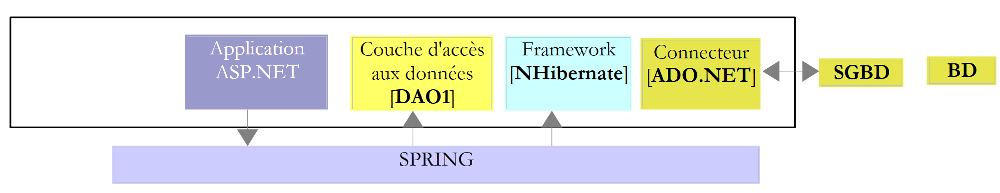
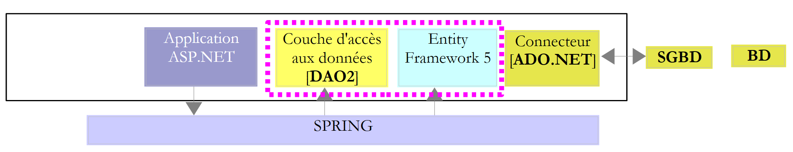
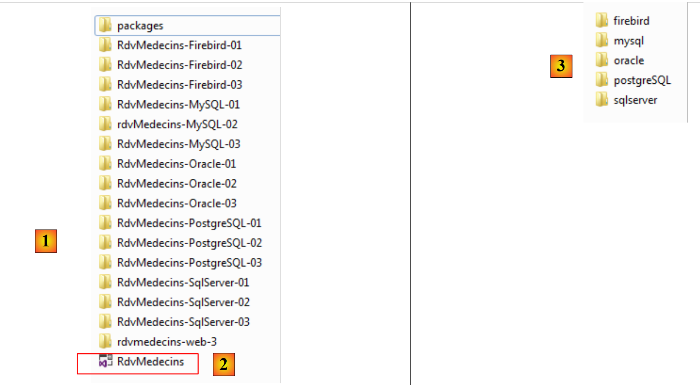
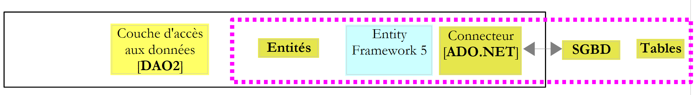

1. Introduction
1.1. Objectif
Entity Framework est un ORM (Object Relational Mapper) initialement créé par Microsoft et maintenant disponible en open source [juillet 2012, http://entityframework.codeplex.com/]. Dans un cours ASP.NET j'utilise l'architecture suivante pour une certaine application web :
|  |
Le framework NHibernate [http://sourceforge.net/projects/nhibernate/] est un ORM apparu avant Entity Framework. C'est un produit mature permettant de se connecter à diverses bases de données. L'ORM isole la couche [DAO] (Data Access Objects) du connecteur ADO.NET. C'est l'ORM qui émet les ordres SQL à destination du connecteur. La couche [DAO] utilise elle l'interface offerte par l'ORM. Celle-ci dépend de l'ORM. Ainsi changer d'ORM implique de changer la couche [DAO].
Cette architecture résiste bien aux changements de SGBD.
Lorsqu'on relie la couche [DAO] directement au connecteur ADO.NET, changer de SGBD a un impact sur la couche [DAO] :
- les SGBD n'ont pas tous les mêmes types de données ;
- les SGBD n'ont pas les mêmes stratégies de génération des clés primaires ;
- les SGBD ont du SQL propriétaire ;
- la couche [DAO] a pu utiliser des bibliothèques liées à un SGBD précis ;
- ...
Lorsque c'est un ORM qui est relié au connecteur ADO.NET, changer de SGBD revient à changer la configuration de l'ORM pour l'adapter au nouveau SGBD. La couche [DAO] ne change pas.
Le framework Spring.NET [http://www.springframework.net/index.html] assure l'intégration des couches d'une application. Ci-dessus :
- l'application ASP.NET demande à Spring une référence sur la couche [DAO] ;
- Spring exploite un fichier de configuration pour créer cette couche et en rendre la référence.
Cette architecture résiste bien aux changements de couches tant que celles-ci présentent toujours la même interface. Changer la couche [DAO] ci-dessus, consiste à changer le fichier de configuration de Spring pour que la nouvelle couche soit instanciée à la place de l'ancienne. Comme celles-ci implémentent la même interface et que la couche ASP.NET utilise cette interface, la couche ASP.NET reste inchangée.
On a donc là une architecture souple et évolutive. Pour le montrer, nous allons remplacer l'ORM NHibernate par Entity Framework 5 :
|  |
Nous allons procéder en plusieurs étapes :
- on va découvrir Entity Framework 5 avec plusieurs SGBD ;
- on construira la couche [DAO2] ;
- on connectera l'application ASP.NET existante à cette nouvelle couche [DAO].
1.2. Les outils utilisés
Les tests ont été réalisés sur un portable HP EliteBook avec Windows 7 pro, un processeur Intel Core i7, 8 Go de RAM. Nous utiliserons C# comme langage de développement.
Le document utilise les outils suivants tous disponibles gratuitement :
Les IDE de développement :
- Visual Studio Express pour le bureau 2012 [http://www.microsoft.com/visualstudio/fra/downloads] ;
- Visual Studio Express pour le web 2012 [http://www.microsoft.com/visualstudio/fra/downloads].
Le SGBD SQL Server Express 2012 :
- le SGBD : [http://www.microsoft.com/fr-fr/download/details.aspx?id=29062] ;
- un outil d'administration : EMS SQL Manager for SQL Server Freeware [http://www.sqlmanager.net/fr/products/mssql/manager/download].
Le SGBD Oracle Database Express Edition 11g Release 2 :
- le SGBD : [http://www.oracle.com/technetwork/products/express-edition/downloads/index.html] ;
- un outil d'administration : EMS SQL Manager for Oracle Freeware [http://www.sqlmanager.net/fr/products/oracle/manager/download] ;
- un client Oracle pour .NET : ODAC 11.2 Release 5 (11.2.0.3.20) with Oracle Developer Tools for Visual Studio : [http://www.oracle.com/technetwork/developer-tools/visual-studio/downloads/index.html].
Le SGBD MySQL 5.5.28 :
- le SGBD : [http://dev.mysql.com/downloads/] ;
- un outil d'administration : EMS SQL Manager for MySQL Freeware [http://www.sqlmanager.net/fr/products/mysql/manager/download].
Le SGBD PostgreSQL 9.2.1 :
- le SGBD : [http://www.enterprisedb.com/products-services-training/pgdownload#windows] ;
- un outil d'administration : EMS SQL Manager for PostgreSQL Freeware [http://www.sqlmanager.net/fr/products/postgresql/manager/download].
Le SGBD Firebird 2.1 :
- le SGBD : [http://www.firebirdsql.org/en/firebird-2-1-5/] ;
- un outil d'administration : EMS SQL Manager for InterBase/Firebird Freeware [http://www.sqlmanager.net/fr/products/ibfb/manager/download].
LINQPad 4 : un outil d'apprentissage de LINQ (Language INtegrated Query) [http://www.linqpad.net/, http://www.linqpad.net/GetFile.aspx?LINQPad4.zip].
1.3. Les codes source
Les codes source des exemples qui vont suivre sont disponibles à l'URL [http://tahe.developpez.com/dotnet/ef5cf].
|  |
Ce sont des projets Visual Studio 2012 [1], rassemblés dans une solution [2]. Dans un dossier [databases], on trouvera un dossier par SGBD utilisé. On y trouve les scripts SQL de génération de la base exemple pour ces SGBD.
1.4. La méthode
Pour découvrir Entity Framework 5 Code First, je suis d'abord parti du livre suivant : " Professional ASP.NET MVC 3 " de Jon Galloway, Phil Haack, Brad Wilson, Scott Allen aux éditions Wrox. Dans l'application exemple de ce livre, les auteurs utilisent Entity Framework (EF) comme ORM. Comme je ne connaissais pas, j'ai parcouru le net pour en savoir plus. J'ai ainsi découvert que la version la plus récente était EF 5 et qu'il y avait des incompatibilités avec EF 4 car le code du livre testé avec EF 5 présentait des erreurs de compilation.
J'ai ensuite découvert qu'il y avait plusieurs façons d'utiliser EF :
- Model First : il existe de nombreux articles sur cette approche de EF, par exemple [http://msdn.microsoft.com/en-us/data/ff830362.aspx]. Cet article est introduit de la façon suivante :
Summary: In this paper we'll look at the new Entity Framework 4 that ships with .NET Framework 4 and Visual Studio 2010. I'll discuss how you can approach it's usage from a model-first perspective with the premise that you can drive database design from a model and build both your database as well as your data access layer declaratively from this model. The model contains the description of your data represented as entities and relationships providing a powerful approach to working with ADO.NET, creating a separation of concerns through an abstraction between a model definition and its implementation.
Un ORM fait le pont entre des tables de bases de données et des classes.
Ci-dessus,
- à gauche de la couche EF5, on a des objets, qu'on appelle des entités ;
- à droite de la couche EF5, on a des tables de base de données.
|  |
La couche [DAO] travaille avec des objets images des tables de la base de données. Ces objets sont rassemblés dans un contexte de persistance et sont appelés entités (Entity). Les modifications faites sur les entités sont répercutées, grâce à l'ORM, sur les tables de la base de données (insertion, modification, suppression). De plus la couche [DAO] dispose d'un langage de requêtage LINQ to Entity (Language INtegrated Query) qui requête sur les entités et non sur les tables. La méthode Model First consiste à construire les entités avec un outil graphique. On définit chaque entité et les relations qui la lient avec les autres. Ceci fait, un outil permet de générer :
- les différentes classes reflétant les entités construites graphiquement ;
- la DDL (Data Definition Language) permettant de générer la base de données.
Les exemples que j'ai trouvés sur cette méthode utilisaient tous Visual Studio 2010 Professional et un modèle appelé ADO.NET Entity Data Model. J'ai pu tester ce modèle avec Visual Studio 2010 Professional mais lorsque je suis passé à Visual Studio Express 2012 qui était ma cible, j'ai constaté que ce modèle n'était plus disponible. J'ai donc abandonné cette approche.
- Database First : le point de départ de cette méthode est une base de données existante. A partir de là, un outil génère automatiquement les entités images des tables de la base. Là encore les exemples trouvés, par exemple [http://msdn.microsoft.com/en-us/data/gg685489.aspx], utilisent Visual Studio 2010 Professional et le modèle ADO.NET Entity Data Model. J'ai donc abandonné également cette approche qui était pourtant ma préférée. Pour savoir quelles entités utiliser comme images d'une base de données existante, il était simple de commencer avec un outil qui les génère.
- Code First : on écrit soi-même les classes qui vont former les entités. Il faut alors avoir un minimum de notions sur le fonctionnement d'EF. C'est la voie que j'ai suivie parce qu'elle était exploitable avec Visual Studio Express 2012.
Ceci acquis, j'ai travaillé de la façon suivante :
- j'écrivais un code pour SQL Server Express 2012 car c'est pour ce SGBD qu'on trouve le plus grand nombre d'exemples ;
- une fois ce code débogué, je le portais sur les autres SGBD (Firebird, Oracle, MySQL, PostgreSQL).
Nous allons ici procéder différemment. Je vais d'abord décrire la totalité des codes pour SQL Server puis je décrirai leur portage pour les autres SGBD. Dans ce portage, les ajustements suivants ont lieu :
- les bases de données ont des particularités propriétaires. J'ai notamment utilisé des Triggers pour générer le contenu de certains colonnes de façon automatique. Chaque SGBD a sa façon propre de gérer cela ;
- les entités images des tables peuvent changer mais c'est alors volontaire. J'aurais pu choisir des entités convenant à toutes les bases de données ;
- le pilote ADO.NET du SGBD change ;
- la chaîne de connexion au SGBD change.
La progression adoptée est la suivante :
- association entités / base de données. Remplissage de la base ;
- dump de la base avec des requêtes LINQ ;
- LINQPad, un outil d'apprentissage de LINQ ;
- ajout, suppression, modification d'entités ;
- gestion de la concurrence d'accès ;
- contexte de persistance sauvegardé dans une transaction ;
- modification d'une entité hors contexte de persistance ;
- Eager et Lazy loading ;
- construction de la couche [DAO] ;
- construction de la couche web ASP.NET.
1.5. Public visé
Le public visé est celui des débutants.
Ce document n'est pas un cours sur Entity Framework 5 Code First. Pour cela, on pourra lire par exemple " Programming Entity Framework: Code First ", de Julie Lerman et Rowan Miller aux éditions O'Reilly. Le document ne vise aucunement l'exhaustivité mais expose simplement la démarche que j'ai utilisée pour appréhender cet ORM. Je pense que celle-ci peut servir à d'autres personnes abordant EF5. Mon objectif ne dépasse pas ce cadre.
1.6. Articles connexes sur developpez.com
Le livre cité ci-dessus servira de référence. Il existe par ailleurs des articles consacrés à Entity Framework sur developpez.com. En voici quelques-uns :
- " Entity Framework – l'approche Code First ", juin 2012 – par Reward. Cet article et le présent document se recoupent partiellement. Il va cependant plus loin sur certains points notamment sur le " mapping " héritage de classes <--> tables ;
- " Introduction à Entity Framework ", décembre 2008, par Paul Musso ;
- " Créer un modèle de classes avec Entity Framework ", avril 2009, par Jérôme Lambert ;
- " Mesure des performances de Linq to SQL face à Sql et Entity Framework ", juin 2011, d'Immobilis ;
- " Entity Framework Code First : activer la migration automatique ", juin 2012, par Hinault Romaric ;
- " Création d'une application CRUD avec WebMatrix, Razor et Entity Framework ", mai 2012, par Hinault Romaric ;
- " Entity Framework : à la découverte de Code First Migrations ", juin 2012, par Hinault Romaric ;
Comme indiqué plus haut, le document présent n'est pas exhaustif. On lira avec profit les articles ci-dessus pour combler certaines lacunes. Ma recherche a pu être incomplète. Que les auteurs que j'ai pu oublier veuillent bien m'excuser.